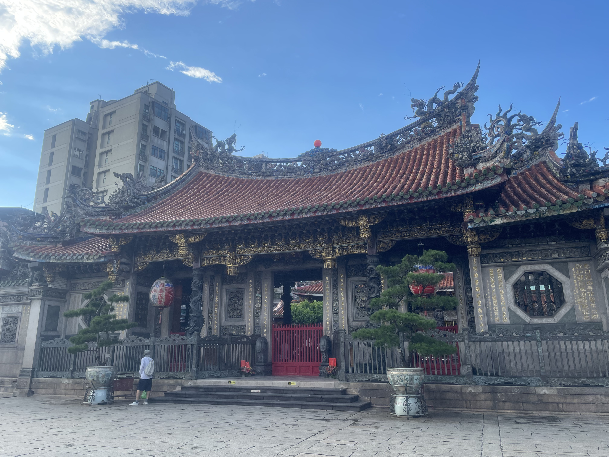
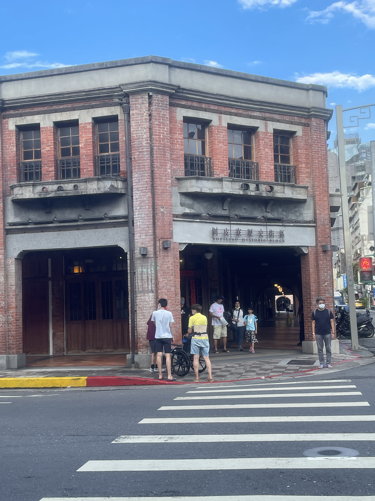
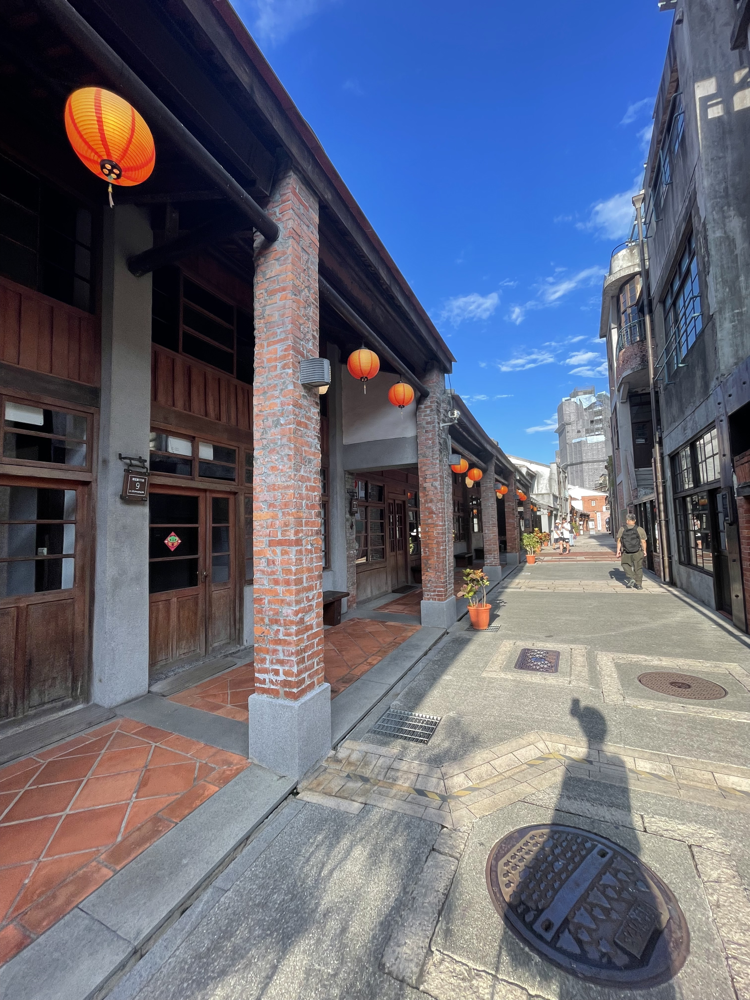
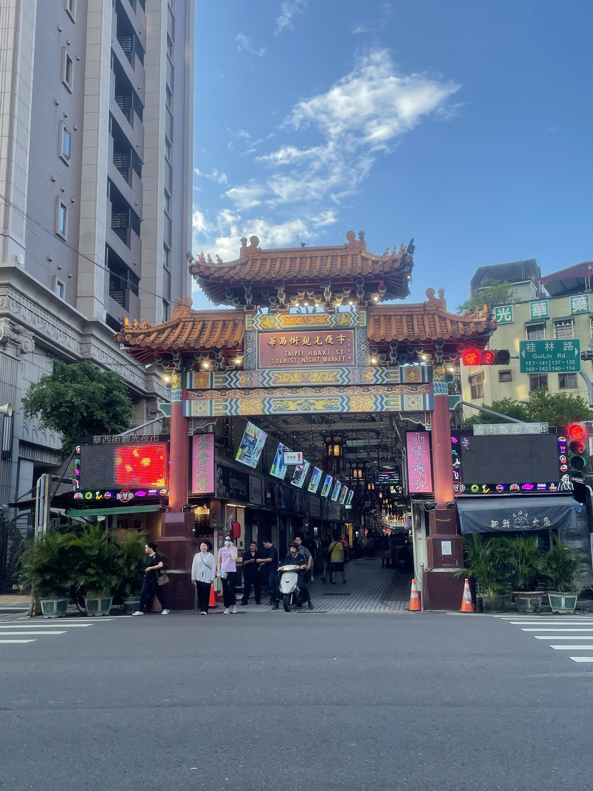
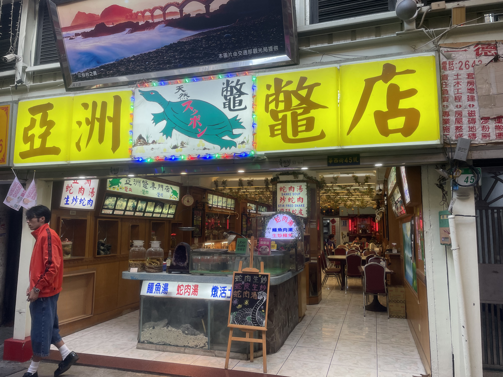

台北市萬華區
基本資訊
位於台北市西側，是台北最早發展的地區之一，也是城市歷史脈絡最為濃厚的行政區。早期以艋舺為名，作為河港與商業重鎮，奠定了台北城市發展的起點，至今仍可在街區紋理中看見早期聚落的痕跡。 相較於東區的現代化景觀，萬華呈現的是貼近日常生活的城市樣貌。老街、市場、寺廟與住宅交織，形成高度在地的生活空間，其中宗教信仰與民俗活動在社區中仍扮演重要角色，使萬華保有強烈的地方性與人情味。 近年來，萬華也逐步進行更新與再生，透過文化場館、歷史建築保存與公共空間改善，嘗試在老城區中注入新的使用方式。整體而言，萬華區是一個承載台北集體記憶的地方，在傳統與轉變之間，持續展現屬於老城的生命力。
推薦景點
| 龍山寺
是台北最具代表性的古老寺廟之一，也是萬華發展歷史中的重要核心。寺廟創建於清代，長年作為艋舺地區的信仰中心，見證台北從河港聚落到現代城市的變遷。 龍山寺供奉觀世音菩薩，並融合佛教、道教與民間信仰，多元的神祇體系反映出台灣民間信仰的包容性。建築本體以傳統閩南式格局為主，木雕、石雕與屋脊剪黏極具工藝價值，即使歷經天災與戰火，仍多次重建並延續原有形式。 今日的龍山寺不只是宗教場所，也是萬華日常生活的重要場景。香客、居民與旅人交錯其中，使這座古寺成為連結信仰、歷史與城市生活的公共空間，充分展現萬華深厚而持續運作的文化底蘊。
| 剝皮寮歷史街區
是保存相當完整的清代街屋聚落之一，也是艋舺早期商業活動的重要見證。其街屋形式與街道尺度，反映出當時以街市為核心的生活與交易模式，呈現出台北早期城市發展的樣貌。 這一帶在都市變遷中一度面臨拆除危機，後來透過文化資產保存與修復工程，保留下紅磚街屋、拱廊與連續立面，使歷史空間得以重新被使用。修復後的剝皮寮轉型為文化展示與教育場域，常以展覽與活動的方式介紹萬華歷史與在地故事。 今日的剝皮寮不只是歷史遺跡，更是一個讓人理解老城紋理的空間。行走其中，可以感受到時間累積在建築與街道上的痕跡，也讓萬華作為台北發源地的角色更加具體可感。




